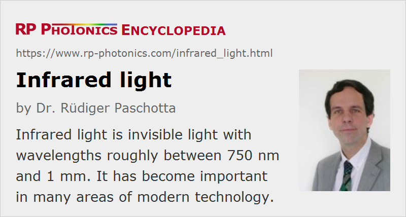

Infrared Light
Acronym: IR light
Definition: invisible light with wavelengths roughly between 750 nm and 1 mm
More general terms: light
German: infrarotes Licht, Infrarotlicht
How to cite the article; suggest additional literature
Author: Dr. Rüdiger Paschotta
Infrared light is light with a vacuum wavelength longer than ≈ 700–800 nm, the upper limit of the visible wavelength range. That limit is not well-defined, as the responsivity of the eye is reduced very gradually in that spectral region. Although the responsivity e.g. at 700 nm is already very low, even the light from some laser diodes at wavelengths beyond 750 nm can be seen if that light is sufficiently intense. Such light may be harmful for the eye even if it is not perceived as very bright. The upper limit of the infrared spectral region in terms of wavelength is also not precisely defined; it is usually understood to be roughly 1 mm.
Different definitions are used for distinguishing different infrared spectral regions:
- The near-infrared spectral region (also called IR-A) is normally understood to range from ≈ 700 to 1400 nm. Lasers emitting in this wavelength region are particularly hazardous for the eye, as near-infrared light is transmitted and focused to the sensitive retina in the same way as visible light, while not triggering the protective blink reflex. Adequate eye protection is then very important.
- The short-wavelength infrared (SWIR, IR-B) extends from 1.4 to 3 μm. This region is relatively eye-safe, since such light is absorbed in the eye before it can reach the retina. Erbium-doped fiber amplifiers for optical fiber communications, for example, operate in that region.
- The mid-infrared (mid-wave infrared, MWIR, IR-C) ranges from 3 to 8 μm. The atmosphere exhibits strong absorption in parts of that region; there are many absorption lines e.g. of carbon dioxide (CO2) and water vapor (H2O). Many gases exhibit strong and characteristic mid-IR absorption lines, which makes this spectral region interesting for highly sensitive trace gas laser absorption spectroscopy.
- The long-wavelength infrared (LWIR, IR-C) ranges from 8 to 15 μm. It is followed by the far infrared (FIR), which ranges to 1 mm and is sometimes understood to start at 8 μm already. This spectral region is used for thermal imaging.
Unfortunately, the definitions of these terms vary substantially in the literature. For example, the mid-infrared already ends at 5 μm for some, while others regard it as ranging up to 30 μm.
Most glasses are transparent for near-infrared light but are strongly absorbing for longer wavelengths, where photons can be directly converted to phonons. For silica glass, as used e.g. for silica fibers, strong absorption occurs beyond ≈ 2 μm.
Infrared light is also called heat radiation, since thermal radiation from hot bodies is mostly within the infrared region. Even at room temperature and below, bodies emit significant amounts of mid- and far-infrared light, which can be used for thermal imaging. For example, infrared images of a heated house in winter can reveal leaks of heat (e.g. at windows, roofs, or poorly insulated walls behind radiators) and thus help to efficiently direct measures for improvement.
Infrared Optics
Many optical elements working in the visible spectral range can also work well in the near infrared, possibly with modified dielectric coatings. For longer wavelengths (mid and far infrared), one requires special infrared optics, which are often based on optical materials with low phonon energies in order to obtain a long infrared absorption edge. See the article on infrared optics for more details.
Sources for Infrared Radiation
Most lasers, for example Nd:YAG lasers, many fiber lasers and the most powerful laser diodes, emit near-infrared light. There are comparatively few laser sources for the mid- and far-infrared spectral regions. CO2 lasers can emit at 10.6 μm and some other wavelengths in that region. Typical problems with laser crystals for solid-state mid-IR lasers are the limited transparency range of the host crystal and the tendency for fast multi-phonon transitions bypassing the laser transition; crystal materials with very low phonon energies are required. Cryogenic lead-salt lasers were in earlier years often used for mid-infrared spectroscopy, but are now rivaled by quantum cascade lasers, which partly even achieve continuous-wave operation at room temperature. Free electron lasers can be used as broadly tunable and very powerful sources of infrared light.
Outside the area of lasers, there are other kinds of infrared emitters, particularly infrared light emitting diodes (LEDs) and thermal emitters, the latter generating thermal radiation.
Ordinary light bulbs (incandescent lamps), generating thermal radiation, emit substantially more infrared light than visible light; this is the essential reason for their very limited power conversion efficiency of the order of 5–10%. Sun light also has strong infrared components.
Infrared light can also be generated via nonlinear frequency conversion. For example, mid-infrared light can be generated by difference frequency generation in nonlinear crystal materials, or with optical parametric oscillators. See also the article on mid-infrared laser sources.
Detection of Infrared Light
Many types of photodetectors are suitable for detecting infrared light. For example, photodiodes based on semiconductors with a sufficiently small band gap energy can be used. However, detectors for e.g. the mid-infrared region require such a small bandgap energy that carriers can be excited not only by light, but also via thermal energy, because the photon energy is not much larger than kBT at room temperature. Therefore, infrared detectors often have to be cooled to fairly low temperatures in order to increase their sensitivity. The same holds for infrared cameras.
Particularly for near-infrared light, there are infrared viewers, where infrared light from some scenery is imaged onto an infrared-sensitive photocathode, and generated photoelectrons are accelerated with a high voltage to a fluorescent screen, which then displays the image e.g. in green color. Such IR viewers are used e.g. in laser labs for tracking infrared laser beams.
There are also photocathode materials which allow the operation of photomultipliers in the infrared.
Low-cost tools for visualizing infrared light are laser viewing cards which emit visible light (or change their color) when hits by infrared light.
Quite high detection sensitivities are possible with upconversion of infrared light into the visible.
Removal of Infrared Light
In illumination systems based on incandescent lamps, e.g. in high-power image projectors, the produced infrared radiation is useless and can cause detrimental effects. Therefore, certain heat control filters have been developed for removing infrared light. They can be realized in the form of cold mirrors or hot mirrors.
Questions and Comments from Users
Here you can submit questions and comments. As far as they get accepted by the author, they will appear above this paragraph together with the author’s answer. The author will decide on acceptance based on certain criteria. Essentially, the issue must be of sufficiently broad interest.
Please do not enter personal data here; we would otherwise delete it soon. (See also our privacy declaration.) If you wish to receive personal feedback or consultancy from the author, please contact him e.g. via e-mail.
By submitting the information, you give your consent to the potential publication of your inputs on our website according to our rules. (If you later retract your consent, we will delete those inputs.) As your inputs are first reviewed by the author, they may be published with some delay.
See also: infrared optics, infrared emitters, infrared detectors, infrared viewers, laser viewing cards, mid-infrared laser sources, quantum cascade lasers, ultraviolet light, thermal radiation, thermal imaging, laser spectroscopy
and other articles in the category general optics
|  |
If you like this page, please share the link with your friends and colleagues, e.g. via social media:
These sharing buttons are implemented in a privacy-friendly way!